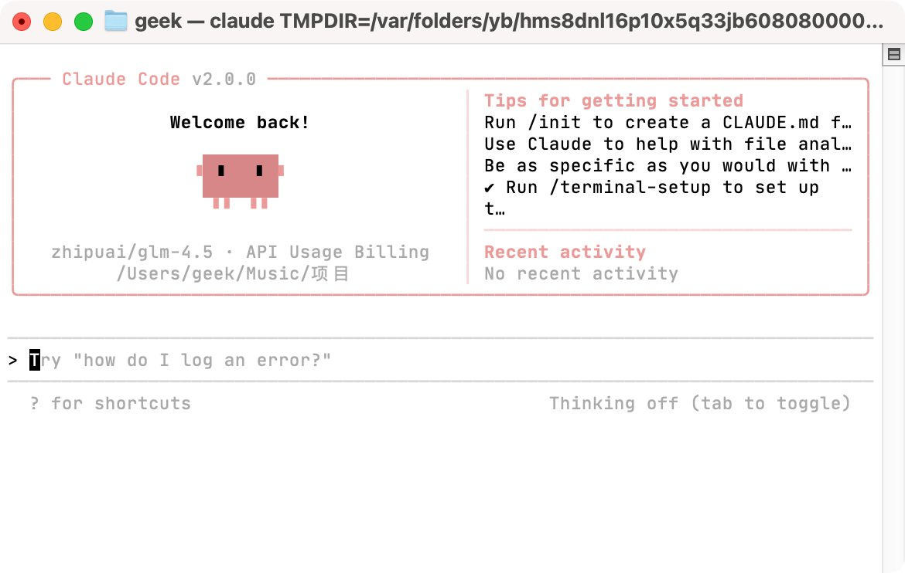

@geekbb 所有其它的点我都忍了，我觉得没有很大问题，但是这个乱加一堆PATH甚至还带硬编码的node版本号是在干什么，后面给我默认指定终端程序偏好又是在干什么……
我觉得原作者的要务是赶紧在简介里标上仅作个人自用存储，不推荐他人使用。
https://t.co/Xtm42TPCrz

我觉得原作者的要务是赶紧在简介里标上仅作个人自用存储，不推荐他人使用。
https://t.co/Xtm42TPCrz

Claude Code Now 世界上最快的 Claude Code 启动器
专为 MacOS 打造，极致简洁，拯救你那被浪费的人生。
- 程序坞启动：丢到 Dock 栏，点一下就完事
- 按住 Command 键，把 Claude Code Now .app 拖拽到 Finder 工具栏启动
- 随处启动：把 App 放在任意文件夹，点就能用
https://t.co/9sJcMH2jEJ https://t.co/Tcj2fg3MwD
专为 MacOS 打造，极致简洁，拯救你那被浪费的人生。
- 程序坞启动：丢到 Dock 栏，点一下就完事
- 按住 Command 键，把 Claude Code Now .app 拖拽到 Finder 工具栏启动
- 随处启动：把 App 放在任意文件夹，点就能用
https://t.co/9sJcMH2jEJ https://t.co/Tcj2fg3MwD